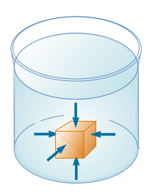
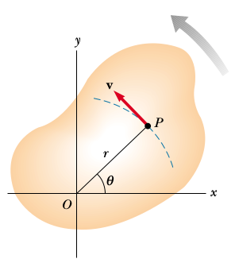
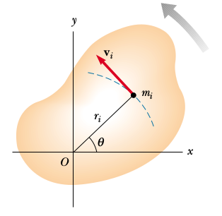
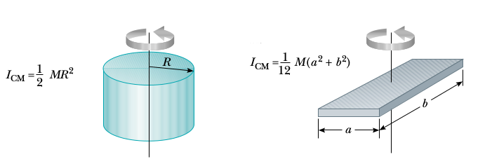
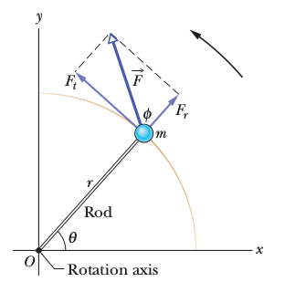

Elastik Çarpışma (Elastic Collision)
$m_1,m_2$ kütlesine sahip $v_1,v_2$ hızında iki küre arasında mükemmel bir elastik çarpışma olduğunu düşünelim, yani çarpışma öncesi ve sonrası enerji kaybı yok, bu durumda, sistemin toplam momentumu da önce ve sonra aynı olacaktır,
$$ m_1 \vec{v}_1 + m_2 \vec{v}_2 = m_1 \vec{v}_1' + m_2 \vec{v}_2' $$
ki $\vec{v}_1,\vec{v}_2,\vec{v}_1',\vec{v}_2'$ hız vektörleri, $\vec{v}_1',\vec{v}_2'$ çarpışma sonrası hız vektörleri.
Eğer momentum muhafaza ediliyorsa, birinci topun kaybettiği ya da kazandığı momentum ikinci topa eklenecek ya da ondan çıkartılacaktır.
$$ m_1 \vec{v}_1 = m_1 \vec{v}_1' - \Delta \vec{p} $$
$$ m_2 \vec{v}_2 = m_2 \vec{v}_2' + \Delta \vec{p} $$
Üstteki idealize ortamda momentum transferi sadece çarpışma çizgisi üzerinde olabilir, bu çizgi, ya da vektör yönü eğer iki topun arasında teğet bir düzlem düşünsek ona dik olan bir vektör olacaktır, ona $n$ diyelim. O zaman, ve $p$ vektörünün büyüklüğünü $P$ ile gösterirsek,
$$ \vec{v}_1' = \vec{v}_1 - (P / m_1) \vec{n} \qquad (1) $$
$$ \vec{v}_2' = \vec{v}_2 + (P / m_2) \vec{n} \qquad (2) $$
Eğer $P$ skalar büyüklüğünü bulabilirsek, çarpışma sonrası yeni hızı elde edebiliriz.
Üstteki resme bakınca görüyoruz ki $v_1$ ve $v_2$ her biri iki tane ayrı vektörün toplamı olarak temsil edilebilir, bu vektörlerden biri çarpışma, momentum transfer çizgisine dik, diğeri ona paralel. Bu bilgi ile, $v_1,v_1',v_2,v_2'$ şöyle temsil edilebilir,
$$ \vec{v}_1 = a_1 \vec{n} + b_1 \vec{q}, \qquad \vec{v}_2 = a_2 \vec{n} + b_2 \vec{q} \qquad (3) $$
$$ \vec{v}_1' = a_1' \vec{n} + b_1' \vec{q}, \qquad v_2' = a_2' \vec{n} + b_2' \vec{q} \qquad (4) $$
$a_1,a_2,b_1,b_2$ tek sayı değerleridir.
(1) formülüne (3a)'yı sokarsak,
$$ v_1' = a_1 \vec{n} + b_1 \vec{q} - (P/m_1) \vec{n} $$
$$ = (a_1 - p/m_1) \vec{n} + b_1 \vec{q} $$
$$ v_2' = a_2 \vec{n} + b_2 \vec{q} + (P/m_2) \vec{n} $$
$$ = (a_2 + P/m_2) \vec{n} + b_2 \vec{q} $$
Ve tabii ki form olarak $\vec{v}_1' = a_1' \vec{n} + b_1' \vec{q}$, ve $\vec{v}_2' = a_2' \vec{n} + b_2' \vec{q}$ olduğunu biliyoruz, o zaman birbirine tekabül eden kısımlara bakarak
$$ a_1' = a_1 - (P/m_1), \qquad b_1' = b_1 \qquad (5) $$
$$ a_2' = a_2 + (P/m_2), \qquad b_2' = b_2 \qquad (6) $$
Şimdi $P$ tek sayı değerini bulmak için enerji muhafazası formülünü kullanabiliriz. Tek boyutta $1/2 m v^2$ şeklinde olan formülü $\frac{1}{2} m \cdot \vec{v}\cdot\vec{v}$ olarak değiştirmek lazım. Ya da $\frac{1}{2} m <\vec{v},\vec{v}>$, ya da $\frac{1}{2} m ||v||^2$. O zaman
$$ \frac{m_1}{2} ||v_1||^2 + \frac{m_2}{2} ||v_2||^2 = \frac{m_1}{2} ||v_1'||^2 + \frac{m_2}{2} ||v_2'||^2 $$
$||v_1||^2$ ve $||v_1'||^2$, vs hesabının kolay bir yolu var, eğer üstteki resme bakarsak mesela $||v_1||$ büyüklüğü kenarları $a_1$ ve $b_1$ olan bir üçgenin hipotenüsü olarak görülebilir.
$$ \frac{m_1}{2} (a_1^2+b_1^2) + \frac{m_2}{2} (a_2^2+b_2^2) = \frac{m_1}{2} (a_1'^2+b_1'^2) + \frac{m_2}{2} (a_2'^2+b_2'^2) $$
Daha önce bulduğumuz (5),(6) değerlerini üstteki formüle sokunca,
$$ \frac{m_1}{2} (a_1^2+b_1^2) + \frac{m_2}{2} (a_2^2+b_2^2) = \frac{m_1}{2} \left( \left(a_1-\frac{P}{m_1} \right)^2 + b_1^2 \right) + \frac{m_2}{2} \left( \left(a_2-\frac{P}{m_1} \right)^2 + b_2^2 \right) $$
$b_1^2$ ve $b_2^2$ iptal olur. Her şeyi $P$ sol tarafta olacak şekilde tekrar düzenlersek,
$$ P = \frac{2 m_1 m_2 (a_1-a_2)}{m_1+m_2} $$
Bu degeri (1) ve (2)'ye sokarsak,
$$ \vec{v}_1' = \vec{v}_1 - \frac{2 m_2 (a_1-a_2)}{m_1+m_2} \vec{n} $$
$$ \vec{v}_2' = \vec{v}_2 + \frac{2 m_1 (a_1-a_2)}{m_1+m_2} \vec{n} $$
Üstteki formülü değişik kaynaklarda, mesela [3], biraz farklı formda görüyoruz, mesela
$$ \vec{v}_1' = \vec{v}_1 - \frac{2m_2}{m_1+m_2} \frac{< \vec{v}_1-\vec{v}_2, \vec{x}_1-\vec{x}_2 >}{||\vec{x}_1-\vec{x}_2||^2} (\vec{x}_1-\vec{x}_2) $$
$$ \vec{v}_2' = \vec{v}_2 - \frac{2m_1}{m_1+m_2} \frac{< \vec{v}_2-\vec{v}_1, \vec{x}_2-\vec{x}_1 >}{||\vec{x}_2-\vec{x}_1||^2} (\vec{x}_1-\vec{x}_2) $$
Fakat biraz dikkat edilince mesela $a_1-a_2$'nin $\vec{n}$ yönündeki hız farkı olduğunu görürüz, yani
$$ a_1-a_2=\frac{< \vec{v}_1-\vec{v}_2,\vec{x}_1-\vec{x}_2 >}{||\vec{x}_1-\vec{x}_2||} $$
Geri kalanlardan zaten $\vec{n} = \vec{x}_1-\vec{x}_2/||\vec{x}_1-\vec{x}_2||$ ve $m_1,m_2$ değerleri de aynı şekilde iki tarafta uyar.
İki kütlenin eşit olduğu durumlarda (ki moleküler simülasyonlarda bu çok rahat kabul edilebilir), formül daha da basitleşir [4],
$$ v_1' = v_1 - \left( (v_1-v_2) \cdot \vec{n} \right) \vec{n} $$
$$ v_2' = v_2 - \left( (v_2-v_1) \cdot \vec{n} \right) \vec{n} $$
ki $\vec{n} = \frac{x_1-x_2}{|x_1-x_2|}$
Basınç (Pressure)
Bir sıvı içinde duran bir objeye tek uygulanan etki, stres onu sıkıştıran türden bir etkidir. Diğer bir deyişle bir sıvı içindeki objenin hissettiği kuvvet onun yüzeyine her zaman diktir.

Bir sıvının içindeki objeye uyguladığı basıncı, o objeye uygulanan birim alanda uygulanan kuvvet olarak temsil edilebiliriz, kuvvet $F$ ve alan $A$ ise,
$$ P \equiv \frac{F}{A} $$
Eğer belli bir noktadan bahsetmek istersek, diyelim $dA$ sonsuz ufaklıktaki bir alana uygulanan $dF$ kuvveti,
$$ P = \frac{dF}{dA} $$
O zaman belli bir alandaki basınç için o alan üzerinden entegral almak gerekir.
Basıncın birimi $N / m^2$, şaşırtıcı olmasa gerek, kuvvet birimi Newton, ve alan birimi $m^2$.
İzafi Enerji Formülü
İzafi mekanikte kuvvet ve momentumdan başlayan formül biraz daha değişiyor [4].
$$ F = \frac{\mathrm{d} (mv)}{\mathrm{d} t} $$
tanımında $m$'in değişmediğini farz etmiştik. Fakat izafi mekanikte enerji uygulandıkça kütlenin büyüdüğünü göz önüne almak lazım. Bu büyüme faktörü $\gamma = \left(1 - \frac{v^2}{c^2} \right)^{-1/2}$, yani bu faktöre oranla kütle büyüyecek. Entegral şu hale geliyor,
$$ E_k = \int _{0}^{t} \frac{\mathrm{d} (\gamma mv)}{\mathrm{d} t} \mathrm{d} x $$
Bu entegral biraz daha karmaşık ama sonunda
$$ E_k = (\gamma - 1)mc^2 $$
elde ederiz. Yani kütleyi daha fazla hızlandırmak için gittikçe daha fazla iş yapmak gerekir çünkü enerji eklendikçe kütle daha ağırlaşır.
Dönüşler, Dönme Direnci (Moment of Inertia)
Saat yönü tersi yönde bir dönüş düşünelim, $s$ kadar dönüş olduysa, orijine uzaklık $r$ ise, açısal mesafe [1, sf. 297]
$$ \theta = \frac{s}{r} $$
ki $\theta$ radyan. Ya da
$$ s = r \theta $$
Çemberin tamamı $2\pi$ rad (tam bir dönüş), meselâ 60 derece $\pi / 3$ rad. Çemberin çevresinin formülü $2\pi r$, eğer $\theta = \pi / 3$ rad ise, $s = \pi / 3 \cdot r $.

Açısal hızı bir $P$ noktasının teğetsel hızından yola çıkarak hesaplayabiliriz, bu noktanın teğetsel hızı sonsuz ufak $s$'nin zamana göre değişimi olacaktır, yani $v = ds / dt$,
$$ v = \frac{ds}{dt} = r \frac{d\theta}{dt} $$

Elde edilen $d\theta / dt$ açısal değişimi gösteriyor, bu işte açısal hızdır, ona $\omega$ diyelim, o zaman teğetsel hızı açısal hız ile şöyle gösterebiliriz,
$$ v = r\omega $$
Formül diyor ki dönen bir katı objenin herhangi bir noktasının teğetsel hızı, o noktanın dönüş eksenine olan uzaklığı çarpı açısal hızına eşittir. O zaman, her ne kadar katı objenin her noktası aynı açısal hızla dönüyor olmasına rağmen her noktanın lineer hızı aynı değildir, çünkü $r$ her nokta için aynı değil. Üstteki formül dönüş merkezinden uzaklaştıkça hızın artacağını söylüyor. Teğetsel hızı hayal etmek için o noktada ayakta durabiliyor olsak yüzümüze çarpacak rüzgar hızını hayal edebiliriz.
İvmeyi de dahil edelim, açısal ivme ile teğetsel ivmenin bağlantısına bakalım, $v$'nin zamana göre türevini alırsak,
$$ a_t = \frac{dv}{dt} = r \frac{d\omega}{dt} $$
$$ a_t = r \alpha $$
Dönüşsel Kinetik Enerji
Dönmekte olan katı bir objenin kinetik enerjisini nasıl hesaplarız?

Objenin en ufak parçalarından başlayarak bunu yapmaya uğraşalım. Obje $z$ ekseni etrafında dönüyor olsun, ve açısal hızı $\omega$ diyelim. Obje içindeki her parçacık $i$'nin kütlesi $m_i$ diyelim, kinetik enerji bu parçacığın lineer hızına bağlıdır (objenin her parçacığı aynı açısal hızda döner ama farklı noktalarda lineer hız $v_i$ farklı olabilir, $v_i = r_i \omega$ üzerinden), o zaman her parçacık için kinetik enerji [1, sf. 299]
$$ K_i = \frac{1}{2} m_i v_i^2 $$
ile gösterilebilir. Tüm obje için,
$$ K_R = \sum_i K_i = \sum_i \frac{1}{2} m_i v_i^2 = \frac{1}{2} \sum_i m_i r_i^2 \omega^2 $$
Bu ifadede $\omega^2$'yi dışarı çekebiliriz, çünkü her parçacık için aynı,
$$ K_R = \frac{1}{2} \left( \sum_i m_i r_i^2 \right) \omega^2 $$
Parantez içindeki ifadeye bir isim verip değişken atayarak daha da işi basitleştirebiliriz, bu ifadeye dönme direnci (moment of inertia) ismi verilir,
$$ I \equiv \sum_i m_i r_i^2 $$
$I$'nin birimi $kg \cdot m^2$'dir, bu notasyonla nihai denklem
$$ K_R = \frac{1}{2} I \omega^2 $$
haline gelir.
Umarım lineer hareketin kinetik enerjisi $\frac{1}{2} m v^2$ ile dönüşsel hareketteki kinetik enerji $\frac{1}{2} I \omega^2$ arasındaki benzerlik dikkati çekmiştir. Lineerden dönüşsele geçerken / karşılaştırmalı düşünürken $I$ hep $m$ yerine geçer, böyle görülür. Dönme direnci $I$ aynen isminin çağrıştırdığı gibi bir kütlenin dönmeye olan gösterdiği dirençtir, aynen bir objenin kütlesinin lineer harekete olan gösterdiği direnç olması gibi.
Önemli bir nokta daha, $I$ formülündeki $r_i$ dikkati çekmiştir, her $m_i$ parçacığının aynı birim ağırlıkta olduğunu farzetsek bile objenin farklı noktalarında dönüş eksenine farklı uzaklıklar olabilir, yani bu uzaklıklar objenin şekline göre değişik olacaktır. Mesela bir dikdörtgensel plakayı orta noktasından döndürüyorsak ene ve boya olan uzaklıklar farklı olacaktır. Bu sebeple tahmin edebileceğimiz üzere her obje için farklı $I$ hesabı olmalıdır. Bu hesabın detayları için [1, sf. 301]'e bakılabilir. İki örnek obje için $I$ altta görülüyor.

Tork (Torque)
Bir kuvvetin bir objeyi bir eksen etrafında döndürme kabiliyeti bir vektör büyüklüğü olan tork ile ölçülür. Dönme eksenine olan uzaklık burada önemli rol oynar, bir kapının kolu menteşeye olabildiği kadar uzaktır, çünkü mesafe arttıkça aynı kuvvet ile daha fazla dönme, daha çok tork elde edilir.

Tork her zaman dönme eksenine teğet olan kuvvet için hesaplanır, ve uzaklık, kol uzaklığı, kuvvetin uygulandığı noktada eksene olan uzaklıktır. Üstteki resimdeki tork $\tau$
$$ \tau = F \sin \phi = F d $$
ile hesaplanır, ki $d = r \sin\phi$ olarak tanımladık.
Dikkat, tork türetilebilecek bir kavram değildir, bir tanımdır. Dönme merkezine uzaklık çarpı kuvvet bazı kavramları biraraya getirmesi açısından faydalı, bu sebeple kullanılıyor.
Tork kuvvet ile karıştırılmamalı. Kuvvet lineer harekette değişiklik yaratır, kuvvet dönüşsel harekette de değişiklik yaratır, ama bu tür değişimde hem kuvvet hem de dönüş merkezine olan kol uzaklığı aynı oranda rol oynar.
Torkun birimi kuvvet çarpı uzunluk, yani Newton metredir. Diğer yandan yapılan iş (work) ve torkun birimleri aynıdır, ama bu iki kavram da birbirinden farklı.
Örnek
Çocuk parklarında tahtıravallı vardır, diyelim bir uçta şişman bir çocuk biniyor, 10 Newton güç uyguluyor. Diğer yanda daha zayıf çocuk, o 5 Newton güç uyguluyor. Bu tahtıravallı hala dengede durabilir, eğer dönme noktasına şişman çocuk 1 metre, diğeri 2 metre uzakta oturuyorlarsa. Niye? Çünkü bu durumda iki tarafın uyguladığı tork birbirine eşit olacaktır.
Kaynaklar
[1] Resnick, Fundamentals of Physics, 8th Ed
[2] Pool Hall Lessons: Fast, Accurate Collision Detection Between Circles or Spheres, https://www.gamasutra.com/view/feature/131424/pool_hall_lessons_fast_accurate_.php?print=1
[3] Elastic collision, https://en.wikipedia.org/wiki/Elastic_collision
[4] https://exploratoria.github.io/exhibits/mechanics/elastic-collisions-in-3d/index.html